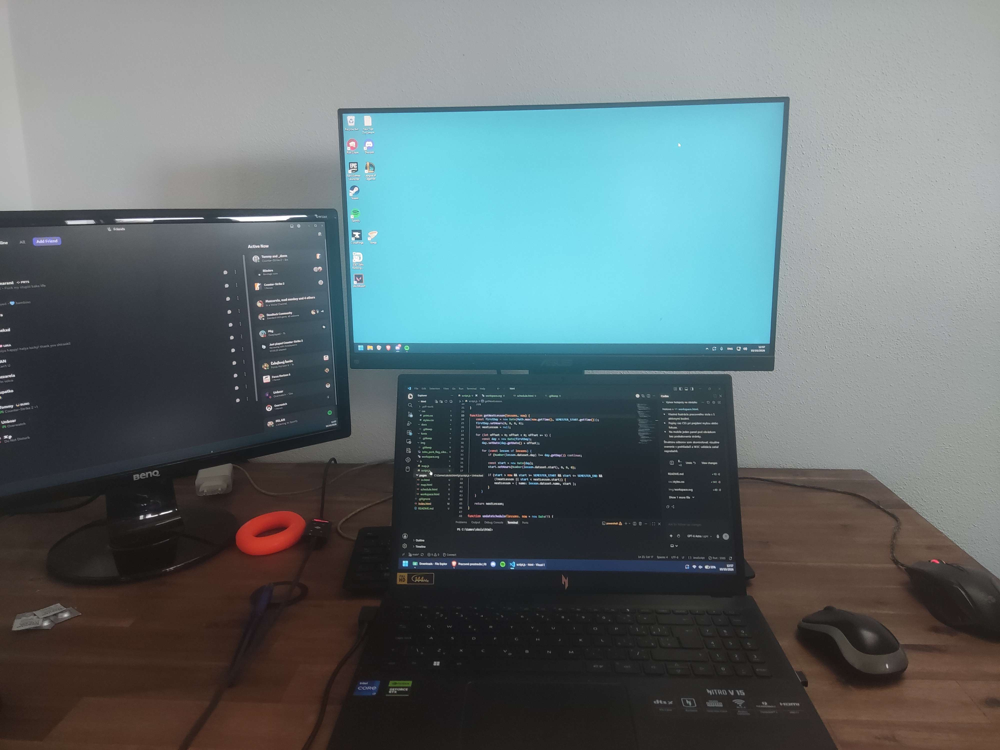

Pracovné prostredie
Pri tvorbe webu prepájam HTML, CSS a JavaScript. Takto vyzerá môj pracovný stôl, pri ktorom sa učím a pracujem na zadaniach.
Prejdi myšou na očíslovaný bod, ťukni naň alebo ho vyber klávesom Tab.

Notebook – HTML, CSS a JavaScript
Na notebooku píšem kód vo Visual Studio Code. Učím sa tu HTML, CSS a JavaScript a postupne skladám tento web.
Monitor
K notebooku mám pripojený veľký monitor. Vďaka ďalšej obrazovke mám viac priestoru pri práci na webe.
Pomôcka na stláčanie
Na stole mám aj oranžový krúžok na stláčanie. Je to malá pomôcka, ktorú mám pri práci poruke.
Lieky na alergiu
Na ľavej strane stola mám položené aj svoje lieky na alergiu. Aj takéto drobnosti patria k môjmu pracovnému prostrediu.
Myš
Vedľa notebooku mám myš na ovládanie počítača. Pri tvorbe webu však skúšam aj ovládanie klávesnicou.